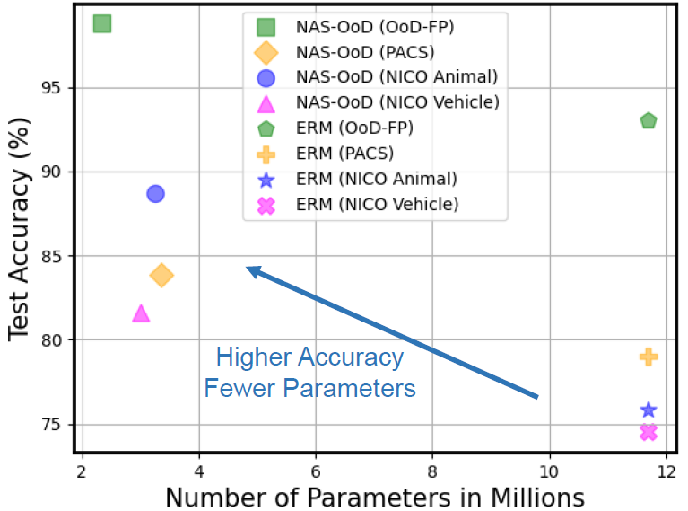
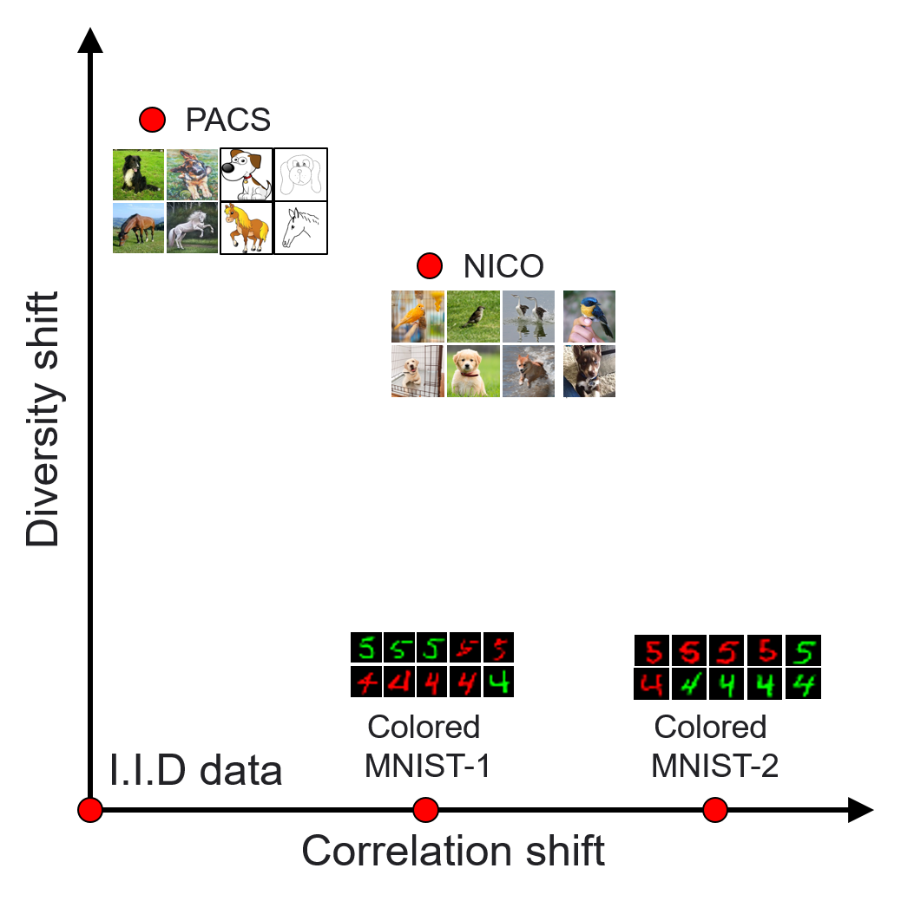
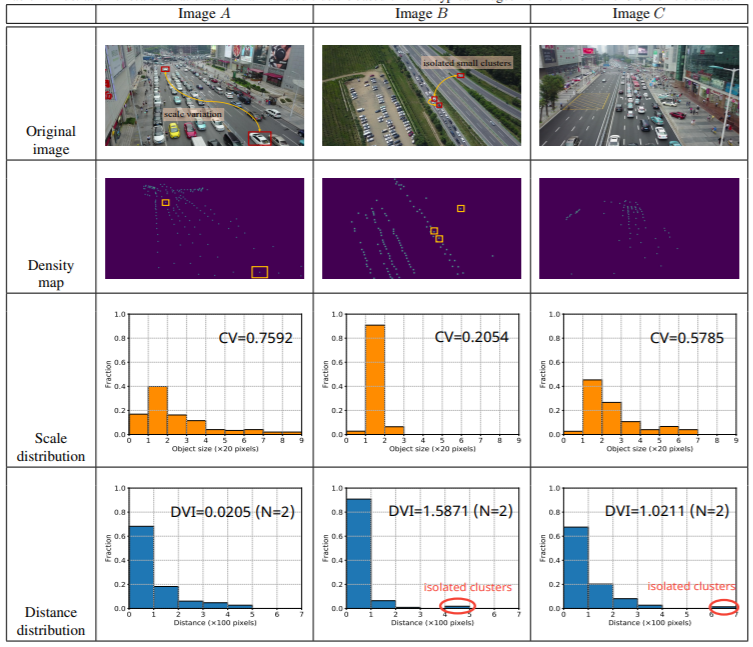
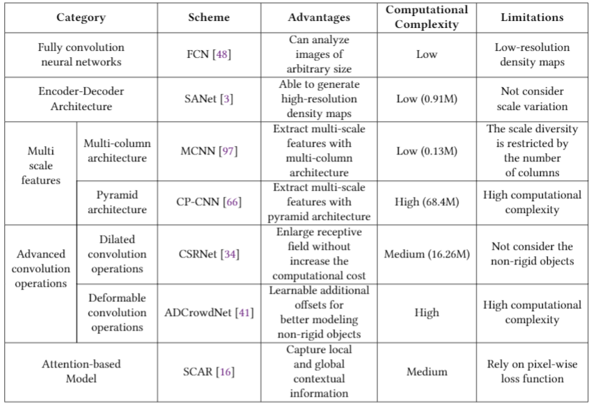
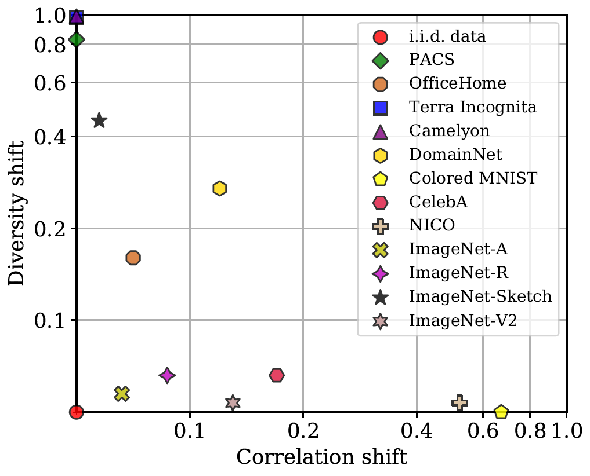

News
* (July 2021) Three papers accepted to ICCV 2021. (Dec 2020) One paper accepted to AAAI 2021. (Oct 2019) One paper accepted to ICCVW 2019.
Your browser does not support the video tag.

NAS-OoD: Neural Architecture Search for Out-of-Distribution Generalization
Haoyue Bai ,
Fengwei Zhou ,
Lanqing Hong ,
Nanyang Ye ,
S.-H. Gary Chan ,
Zhenguo Li
ICCV , 2021
We take the first step to understand the OoD generalization of neural network architectures systematically.
We provide a statistical analysis of the searched architectures and our preliminary practice shows that architecture does influence OoD robustness.
Your browser does not support the video tag.

DecAug: Out-of-Distribution Generalization via Decomposed Feature Representation and Semantic Augmentation
Haoyue Bai* ,
Rui Sun*,
Lanqing Hong ,
Fengwei Zhou ,
Nanyang Ye ,
Han-Jia Ye ,
S.-H. Gary Chan ,
Zhenguo Li
AAAI , 2021
arXiv
/
poster
/
slides
/
press
We design a general OoD generalization framework to tackle possible correlation shift and diversity shift in the real world.
Your browser does not support the video tag.

Crowd Counting on Images with Scale Variation and Isolated Clusters
Haoyue Bai ,
Song Wen,
S.-H. Gary Chan
ICCVW , 2019
arXiv /
code /
poster /
dataset
We quantify two dimension crowd counting challenges: large variation in object scale and isolated clusters of objects.
We also propose a novel scale-adaptive long-range context-aware network for crowd counting.
Your browser does not support the video tag.

A Survey on CNN-based Single Image Crowd Counting: Network Design, Loss Function and Supervisory Signal
Haoyue Bai ,
S.-H. Gary Chan
ACM Computing Surveys , 2021
arXiv /
project page /
slides
We provide an up-to-date review of recent crowd counting approaches, and educate new researchers in this field the design principles and trade-offs.
Your browser does not support the video tag.

OoD-bench: Benchmarking and Understanding Out-of-Distribution Generalization Datasets and Algorithms
Nanyang Ye ,
Kaican Li,
Lanqing Hong ,
Haoyue Bai ,
Yiting Chen,
Fengwei Zhou ,
Zhenguo Li
arXiv , 2021
arXiv /
press
The new benchmark may serve as a strong foothold that can be resorted to by future OoD generalization research.
Honors and Awards
Outstanding Graduates, Zhejiang University, 2018 (Awarded to Top 3% Student) (Awarded to Top 3% Student)
Review Experience
ICCV, BMVC, INFOCOM
Teaching Assistant
The Hong Kong University of Science and Technology
{kind=link}